ВПУСКНОЙ КОЛЛЕКТОР (для моделей с DPF) > СНЯТИЕ |
| 1. ОТСОЕДИНИТЕ ПРОВОД ОТ ОТРИЦАТЕЛЬНОГО ВЫВОДА АККУМУЛЯТОРНОЙ БАТАРЕИ |
| 2. СНИМИТЕ УЗЕЛ ВЕНТИЛЯЦИОННОЙ РЕШЕТКИ В ВЕРХНЕЙ ЧАСТИ КОЖУХА |
| 3. СНИМИТЕ ЭЛЕКТРИЧЕСКИЙ КЛАПАН УПРАВЛЕНИЯ РОГ В СБОРЕ |
| 4. СНИМИТЕ ДАТЧИК АБСОЛЮТНОГО ДАВЛЕНИЯ В КОЛЛЕКТОРЕ |
 |
Отсоедините разъем датчика абсолютного давления в коллекторе и вакуумный шланг.
Выверните болт и снимите датчик абсолютного давления в коллекторе.
| 5. СНИМИТЕ КРОНШТЕЙН КЛАПАНА СИСТЕМЫ СНИЖЕНИЯ ТОКСИЧНОСТИ ОТРАБОТАВШИХ ГАЗОВ |
| 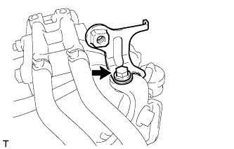 |
Выверните болт и снимите кронштейн клапана системы снижения токсичности отработавших газов.
| 6. СНИМИТЕ КРОНШТЕЙН КОРПУСА ДРОССЕЛЬНОЙ ЗАСЛОНКИ |
| 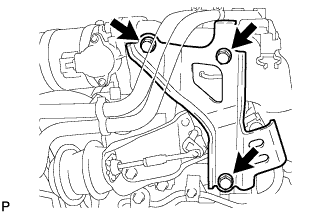 |
Выверните 3 болта и снимите кронштейн корпуса дроссельной заслонки.
| 7. СНИМИТЕ ГАЗОВЫЙ ФИЛЬТР № 1 |
| 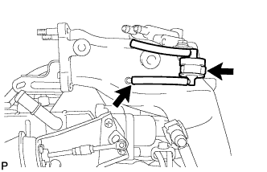 |
Отсоедините вакуумный шланг и снимите газовый фильтр № 1 с кронштейна газового фильтра.
| 8. СНИМИТЕ КРОНШТЕЙН ГАЗОВОГО ФИЛЬТРА |
| 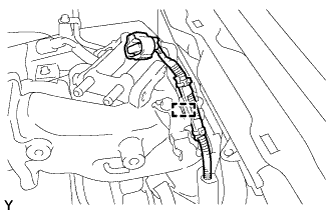 |
Освободите зажим, чтобы отсоединить жгут проводов.
| 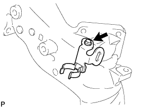 |
Выверните болт и снимите кронштейн газового фильтра.
| 9. ОТСОЕДИНИТЕ ЖГУТ ПРОВОДОВ |
| 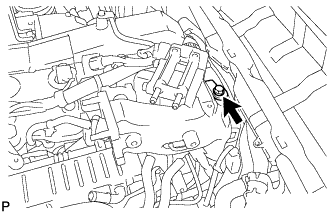 |
Выверните болт и отсоедините жгут проводов.
| 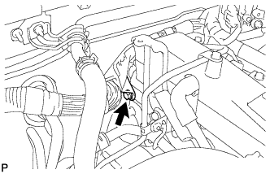 |
Для моделей с левосторонним рулевым управлением:
Выверните болт и отсоедините жгут проводов.
Освободите 5 зажимов и отсоедините жгут проводов от верхней панели кожуха.
| 10. СНИМИТЕ ПАТРУБОК ПОДАЧИ ВОЗДУХА |
| 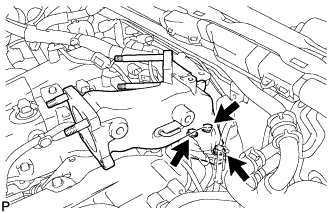 |
Выверните 3 болта и снимите патрубок подачи воздуха и прокладку.
| 11. СНИМИТЕ ТОПЛИВОПРОВОД № 1 |
Отсоедините топливопровод № 2 (Нажмите здесь).
Выверните 4 болта, пустотелый соединительный болт-штуцер и снимите прокладку и топливопровод № 1.
| *1 | Топливопровод № 2 | - | - |
 | Пустотелый соединительный болт-штуцер | - | - |
| 12. СНИМИТЕ ТОПЛИВНУЮ ТРУБКУ ВЫСОКОГО ДАВЛЕНИЯ № 4 |
| 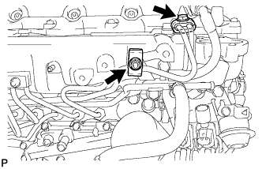 |
Выверните болт, отверните гайку и снимите 2 зажима топливной трубки высокого давления № 2.
| 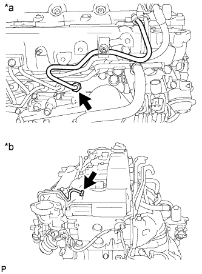 |
С помощью разрезной головки на 17 мм ослабьте гайки штуцеров и снимите топливную трубку высокого давления № 4.
| *a | Со стороны топливной системы Common Rail |
| *b | Со стороны форсунки |
| 13. СНИМИТЕ ТОПЛИВОПРОВОД № 2 |
 |
С помощью шестигранного ключа на 6 мм выверните пустотелый соединительный болт-штуцер и снимите прокладку.
 | Пустотелый соединительный болт-штуцер |
| Топливный обратный клапан |
Снимите обратный топливный клапан, прокладку и топливопровод № 2.
| 14. СНИМИТЕ ТРУБОПРОВОД ОБРАТНОГО СЛИВА ТОПЛИВА № 3 |
| 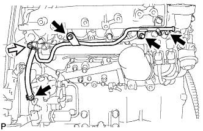 |
Отсоедините 2 топливных шланга.
| Топливный обратный клапан |
Выверните 2 болта.
Снимите обратный топливный клапан, прокладку и трубопровод обратного слива топлива № 3.
| 15. СНИМИТЕ ТРУБОПРОВОД ОБРАТНОГО СЛИВА ТОПЛИВА № 2 |
| 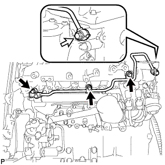 |
Выверните 3 болта.
| Пустотелый соединительный болт-штуцер |
Выверните пустотелый соединительный болт-штуцер и снимите прокладку и трубопровод обратного слива топлива № 2.
| 16. СНИМИТЕ ОПОРУ ВПУСКНОГО ПАТРУБКА |
| 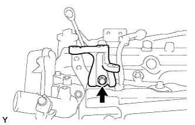 |
Выверните болт и снимите опору впускного трубопровода.
| 17. СНИМИТЕ КОМПЛЕКТ ЭЛЕКТРОВАКУУМНОГО КЛАПАНА |
Отсоедините 2 разъема электровакуумного клапана.
| 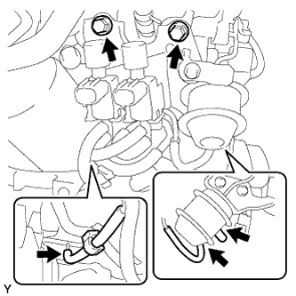 |
Отсоедините 3 вакуумных шланга, а затем выверните 2 болта и снимите комплект электровакуумного клапана.
| 18. СНИМИТЕ ОПОРУ КОЛЛЕКТОРА № 2 |
| 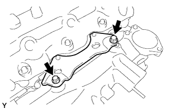 |
Выверните болт и снимите опору коллектора № 2.
| 19. СНИМИТЕ РАЗЪЕМ СВЕЧИ НАКАЛИВАНИЯ № 1 |
Отсоедините разъем свечи накаливания № 1 от жгута проводов.
 |
Снимите 4 уплотнительные шайбы винта.
| 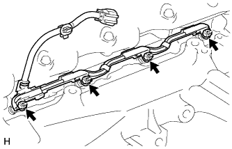 |
Отверните 4 гайки и снимите разъем свечи накаливания № 1.
| 20. СНИМИТЕ ИЗОЛЯТОР ВПУСКНОГО КОЛЛЕКТОРА № 1 |
| 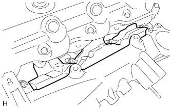 |
| 21. СНИМИТЕ ТЕПЛОЗАЩИТНЫЙ ЭКРАН ВПУСКНОГО КОЛЛЕКТОРА |
| 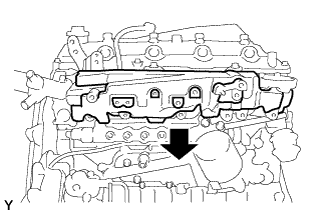 |
Снимите изолятор впускного коллектора.
| 22. СНИМИТЕ ВПУСКНОЙ КОЛЛЕКТОР |
| 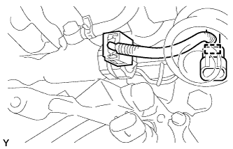 |
Отсоедините зажим разъема жгута проводов датчика от впускного коллектора.
| 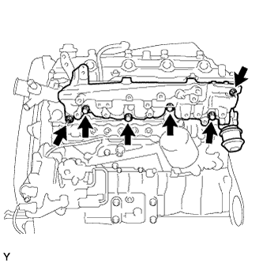 |
Отверните 2 гайки, выверните 4 болта и снимите впускной коллектор и прокладку.